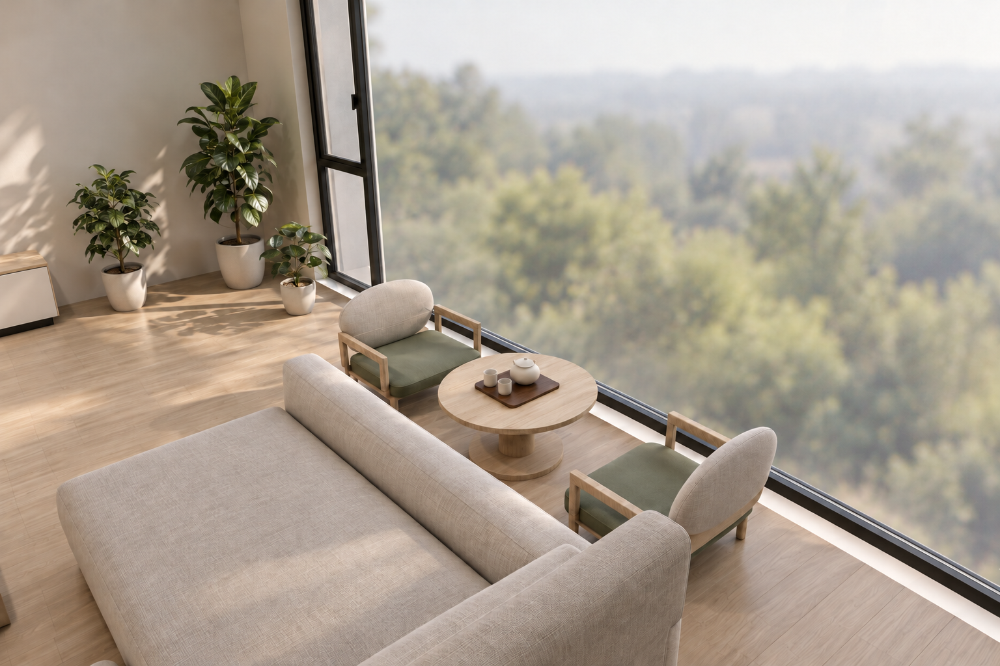
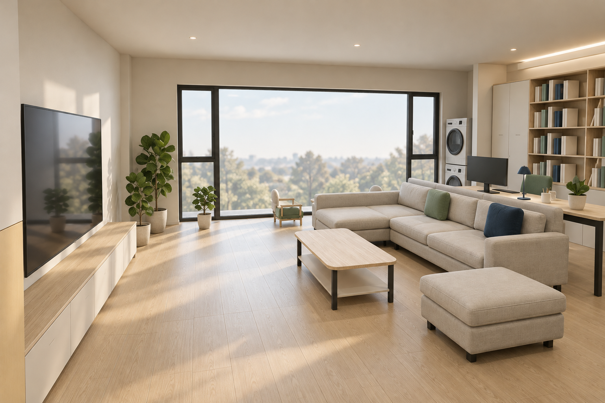
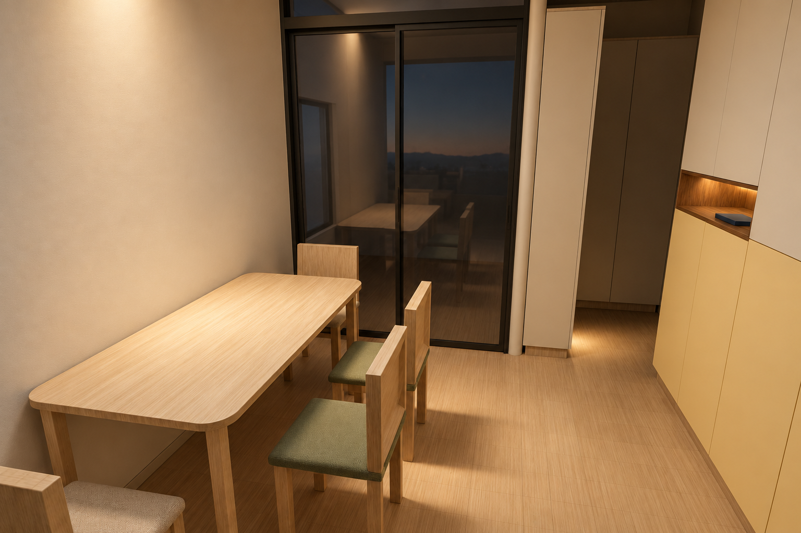
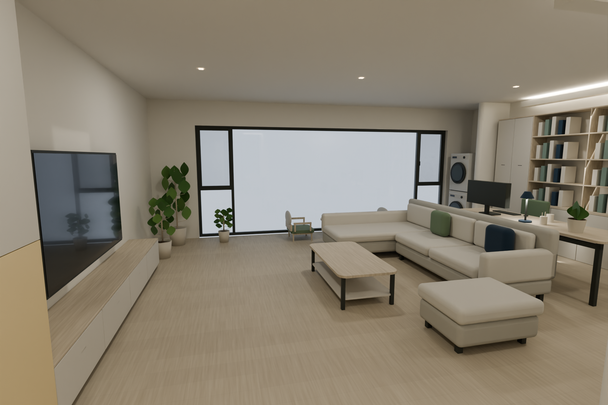
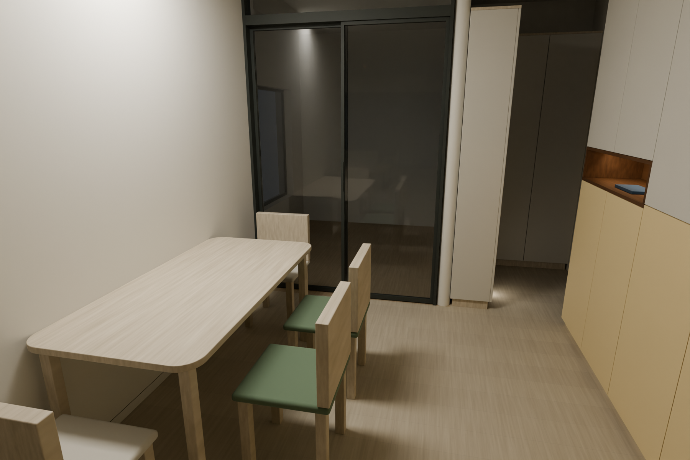
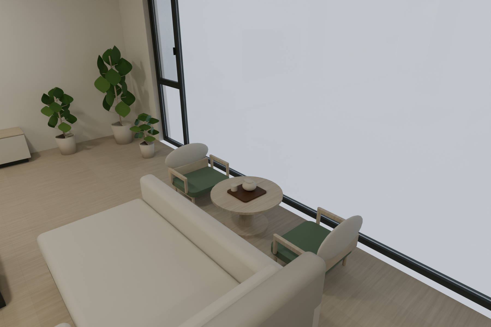

阳台矮茶席 · 客厅 · 餐厅
矮圆桌直径700、高380mm；两把矮茶椅座面230、总高580mm。暖白、浅木、米灰，灰绿与深蓝点色。以下为实景风格概念效果，窗外景色为示意。

阳台 · 矮茶席
客厅 · 暖白浅木
餐厅 · 晚间氛围查看同版模型实体参考图

living-day · 实体参考
dining-evening · 实体参考
balcony-day · 实体参考打开可移动模型 · 家具悬停看长宽高，100mm移动。
后续门厅、电视墙、灯光、窗帘将按新PDF另作v12，入户L柜在本版仍保留供比较。